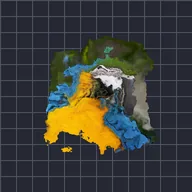

Displace Turbulen

Mendorong lapisan dengan noise fraktal halus, untuk api, air, kabut panas, atau tepi alami yang kasar.
Pengaturan
| Pengaturan | Jenis | Rentang | Default |
|---|---|---|---|
| Paralaks | Titik (X, Y) | -5000 px hingga 5000 px | 0 px, 0 px |
| Offset | Titik (X, Y) | -5000 px hingga 5000 px | 0 px, 0 px |
| Kekuatan | Angka | 0 hingga 2.5 | 0.25 |
| Evolusi | Angka | -50 hingga 50 | 0 |
| Arah | Pilihan | Keduanya, Horizontal, Vertikal, Radial, Puntir | Keduanya |
| Skala | Angka | 0.01 hingga 50 | 1 |
| Regang | Titik (X, Y) | 0.01 hingga 10 | 1, 1 |
| Seed | Angka | 0 hingga 5 | 0 |
| Oktaf | Angka | 1 hingga 9 | 6 |
| Bias | Angka | -1 hingga 1 | 0 |